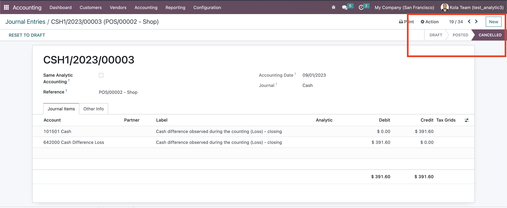

<section class="oe_container">
    <div class="oe_row oe_spaced">
        <h2 class="oe_slogan" style="color:#3498db; font-weight: 400;">KOLA ANALYTIC ACCOUTING</h2>
        <div class="oe_span10">
            <style>
                /* Add custom styles here */
                .custom-background {
                    background-color: #f4f4f4; /* Choose your desired background color */
                    padding: 20px;
                }
                
                .oe_specs {
                    font-weight: bold;
                }
            </style>

            <p class="oe_mt32">
                <div class="container">
                    <div class="row">
                        <div class="col-md-12 custom-background">
                            <p>
                                This Odoo module automates the cancellation of cash difference loss and profit,
                                providing a seamless solution to manage and rectify discrepancies in cash transactions. 
                                With this module, you can effortlessly handle and resolve financial discrepancies, ensuring 
                                accurate accounting and minimizing potential losses.
                            </p>
                            
                        </div>
                    </div>
                </div>
                
                
                
                <style>
                    /* Custom styles for strong elements */
                    strong {
                        color: #3498db !important; /* Blue color */
                        font-weight: 600 !important; /* Increased font weight */
                        font-size: 1.2rem !important; /* Slightly larger font size */
                    }
                
                    /* Custom CSS for alternating the layout */
                    .list-unstyled li:nth-child(even) .row {
                        flex-direction: row-reverse;
                    }
                
                    /* Ensure images maintain their aspect ratio */
                    .img-fluid {
                        max-width: 100%;
                        height: auto;
                    }
                </style>
                
                <div class="container mt-4">
                    <div class="row">
                        <div class="col-md-12">
                            <h3 class="text-center mb-4" style="color:#037ac9; font-size: 20px;">Specifications</h3>
                            <ul class="list-unstyled">
                                <li class="mb-4 pb-4">
                                    <div class="row ">
                                        <div class="col-md-7">
                                            
                                        </div>
                                        <div class="col-md-5 d-flex align-items-center justify-content-center"> <!-- Center content horizontally -->
                                            <div class="text-left"> <!-- Left-align text -->
                                                <strong style="color:#037ac9; font-size: 15px; font-weight: 400;">Cancel Cash Difference POS on close of session</strong>
                                                <p>
                                                    Cash Difference Loss / Profit Entry is automatically cancelled. It is not deleted.
                                                </p>
                                            </div>
                                        </div>
                                    </div>
                                </li>
                                
                               
                    
                              
                            </ul>
                        </div>
                    </div>
                </div>
                
                
            </p>
        </div>
    </div>
    </section>
        
    